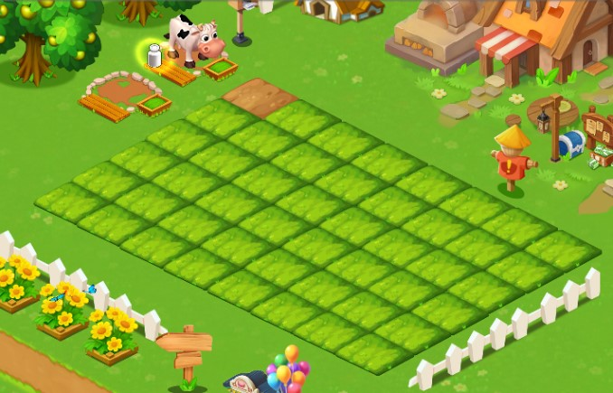
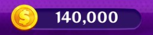
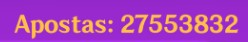
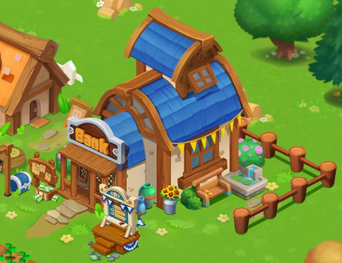

Principais dúvidas
O que é o Happy Farmin?
Happy Farmin é um jogo de gerenciamento financeiro onde você cuida de uma fazenda, investe moedas de ouro para comprar terras, árvores e animais e recebe um grande número de moedas de ouro todos os dias.

As moedas de ouro podem ser convertidas em dinheiro real por meio de saques via PIX!

Quais as condições para efetuar o saque?
Você deve ter um total de pelo menos 5.000.000 (cinco milhões) de moedas para poder solicitar um saque de R$ 50,00.
É importante ressaltar que a mesma quantia deve ter sido investida no jogo, tanto nos cassinos quanto no banco da fazenda. Este dinheiro gasto e investido é chamado de rollover. 
Sendo assim, se você deseja sacar uma determinada quantia de moedas, o rollover (Apostas) deve ser igual ou maior à quantia que você deseja retirar.
Como ficou o rollover depois da atualização?
Os juros decorrentes das aplicações continuam gerando rollover, assim como os investimentos na fazenda (tanto nas plantações quanto nos animais) e, por último mas não menos importante, as apostas.
Você só precisa continuar reaplicando no banco para que renda juros, reinvestindo o seu dinheiro na fazenda e apostando as quantias remanescentes para garantir que o valor de rollover sempre supere o valor desejado como saque.
Solicitações
Como solicito minhas recompensas pelos vídeos?
Envie uma mensagem para um Administrador que contenha o seu id e os respectivos links para que a sua solicitação seja avaliada.
Cada vídeo paga atualmente 1.500.000 moedas de ouro. O equivalente a R$ 15,00. A recompensa total pode chegar a 45.000.000, o equivalente a R$ 45,00.
Caso a solicitação seja aprovada, suas recompensas chegarão no e-mail dentro de 24 horas.
E a recompensa de primeiro saque?
Basta tirar um print do saque solicitado, digitar o seu ID e marcar um Administrador. A imagem pode ser enviada diretamente no grupo do Telegram, não necessitando entrar em contato no privado.
Já passaram as 24 horas e eu não recebi a minha recompensa. O que fazer?
Entre em contato com o Administrador do grupo que estiver em horário de atendimento e verifique se a sua recompensa já foi solicitada.
Como são muitos jogadores, podem acontecer falhas durante o processo. Uma vez verificado, você receberá um feedback imediatamente.